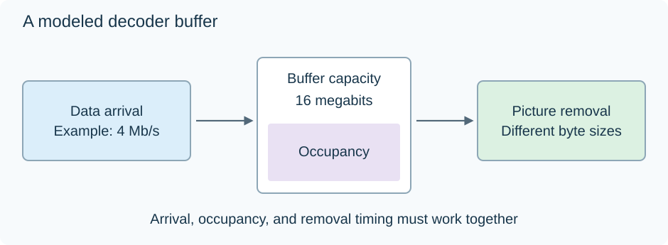

Video Buffering Verifier (VBV)
A film can average 4 Mb/s and still contain a short section that needs data faster than a decoder can accept it. Video Buffering Verifier (VBV) constraints address that problem by asking whether the encoded pictures can pass through a defined rate-and-buffer model.
The model has three essential ingredients: how data arrives, how much coded data can be stored, and when each picture removes its required data. An average for the whole film leaves the last two questions unanswered.

Rate, capacity, and occupancy
Suppose a simplified model accepts data at 4 Mb/s, has a capacity of 8 megabits, and starts with 4 megabits already available.
The input rate describes how quickly the buffer can refill. Capacity is its maximum stored amount. Occupancy is how much it contains at a particular moment.
A large picture can use data accumulated during easier pictures. It can require more than one frame interval's worth of arriving data without exceeding the model, provided that enough has arrived before its removal time.
A picture fails the model if it needs bits that are not available when it must be decoded. The opposite limit matters too: arrivals and removals must follow rules that keep stored data within the permitted capacity. Codec models specify these details more precisely than this simplified illustration.
Follow a burst through the buffer
The following calculation groups picture removals into one-second intervals to make the arithmetic visible. Real bitstream conformance checks operate at the codec's specified removal times.
| Interval | Starting occupancy | Data arrives | Pictures use | Ending occupancy |
|---|---|---|---|---|
| 1 | 4 Mb | 4 Mb | 6 Mb | 2 Mb |
| 2 | 2 Mb | 4 Mb | 6 Mb | 0 Mb |
| 3, same demand continues | 0 Mb | 4 Mb | 6 Mb | 2 Mb short |
The first two demanding intervals succeed because the buffer had a reserve. Continuing the burst exhausts it. An easier interval using 2 Mb could rebuild the reserve by 2 Mb under the same arrival rate.
The film might still average 4 Mb/s overall. That would not repair the shortage in interval 3: data from a later easy scene cannot travel backward in time.
Buffer capacity divided by arrival rate gives a useful scale. Here, 8 Mb / 4 Mb/s is two seconds. It is a description of the model's capacity relative to the rate, not an automatic two-second player startup setting.
What the encoder changes
An encoder enforcing VBV has to fit its choices to the available budget at each point. During a difficult scene it may increase quantization, simplifying the residual information and reducing the number of coded bits. The result can be a local loss of texture or visible artifacts even when a quality setting stays unchanged.
In x265, vbv-maxrate supplies the rate constraint and vbv-bufsize supplies the capacity. Their documented units differ: kilobits per second for the former, kilobits for the latter. Initial fullness is another setting because starting with a larger reserve changes what an early burst can use.
Combining CRF with these constraints lets the encoder pursue its quality target while the model permits it. When the two conflict, the delivery constraint can take priority. A smaller buffer or lower rate leaves less room to accommodate a difficult sequence at that quality.
VBV is also not a synonym for CBR. A variable-rate encode can obey a bounded-buffer model. The buffer is exactly what allows some variation in picture sizes and short-term demand.
Coding buffer versus playback buffer
The coding model describes a constrained decoder's coded-data supply. An app's downloaded-data buffer deals with the actual network: requests, bandwidth variation, latency, and stalls. They are related in use but are different quantities.
A player can accumulate data before starting, yet still have a decoder with limits on coded-picture size, timing, or buffering. Conversely, a conforming bitstream can stall over a connection that delivers less data than it needs.
For an Emby transcode whose picture becomes softer during a busy scene, bitrate and buffering constraints provide a possible causal explanation: the encoder had to reduce that scene's data demand. For a stream whose picture is fine but playback pauses, examine delivery as well. The two observations lead to different parts of the playback path.
See Also
- Constant Bitrate Video Encoding
- Variable Bitrate Video Encoding
- Constant Rate Factor (CRF) for Video
- Video Codec Levels and Tiers